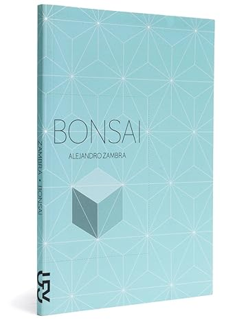

Bonsai
Bonsai es la historia de un amor, el de Julio y Emilia, y es la historia del fin de este amor. También es una historia sobre la conciencia del fin. Y no sólo para Emilia y Julio, “jóvenes tristes que leen novelas juntos, que se despiertan con los libros perdidos entre las tapas”, sino para nosotros, los lectores, que en la primera línea de esta historia falsamente sencilla recibimos la noticia: “En Al final ella muere y él queda solo”. Novela ópera prima del chileno Alejandro Zambra (1975), Bonsái pone en escena a dos estudiantes de Letras, sus lecturas, encuentros y desencuentros. Con cortes precisos y un refinado sentido formal, Zambra -elegido por la revista británica Granta como uno de los veintidós mejores escritores jóvenes hispanoamericanos- avanza la trama como si cultivara un bonsái. Traducida en diez países, entre ellos Francia, Italia, China, Israel, Estados Unidos y Japón, Bonsai ganó el Premio de la Crítica y el Premio del Consejo Nacional del Libro a la mejor novela de 2006 en su país.